Tavern master
Garld
A former adventurer who runs the tavern's job board. Loud and warm-hearted — every rumour in town finds its way to his ears.

Survival Action RPG
Survive a battlefield flooded with monsters, armed with nothing but a knife. Back in town, the next job and the next chapter of the story are waiting.
Bit-Rate-Rush is a 2D pixel-art survival action RPG built with Pyxel. You play a lone young man who has just reached the castle town. Take a job at the tavern, cut your way through the oncoming horde, and make it back to town alive. Spend the coins you found on better gear, and as the jobs pile up, the truth behind what is eating away at the town and the world comes into view.
Overview
On the battlefield, the only thing you control is where your character moves. Weapons aim and fire on their own, and magic triggers by itself. How do you thread the gaps in the horde? Which weapon or ability do you grow on the next level up? Those two questions are all you have to think about. A single job takes about 3 to 10 minutes, so even on a handheld you can pick it up one job at a time.
Story
Every living thing in this world carries bits, tiny motes of light. When a monster falls, its bits scatter and fade on the wind. No human hand can gather them.
The world also has a rate — the speed at which everything flows. When the rate rises, sleeping monsters wake without end and pour toward the town in a great tide. People call this calamity the Rush, and they have feared even to speak its name.
Now, bats are beginning to darken the sky over the castle town of Lumen.
— It began the day a young man walked through the town gate.
His home beyond the mountain was swallowed by a Rush, and he reached Lumen alone. All he carries is a single knife. Without even the coin for a bed, he stands before the tavern's job board — because he has to live.

Play
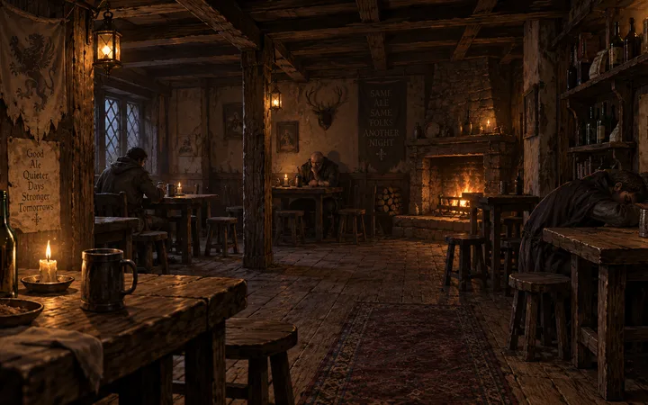
Pick your next job from the board. There are two kinds: survive until the timer runs out, or defeat a set number of monsters. The rumours the master shares point the way to the next chapter.
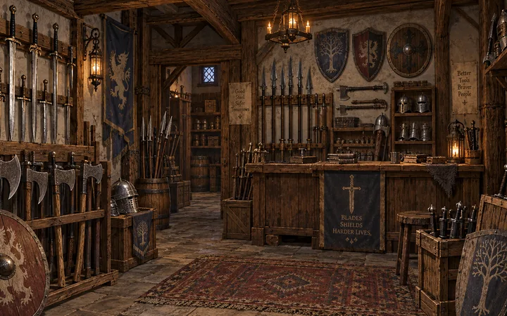
Spend the coins you picked up on the battlefield to buy new weapons or upgrade the ones you own. Each rank adds power and volume to your attacks.
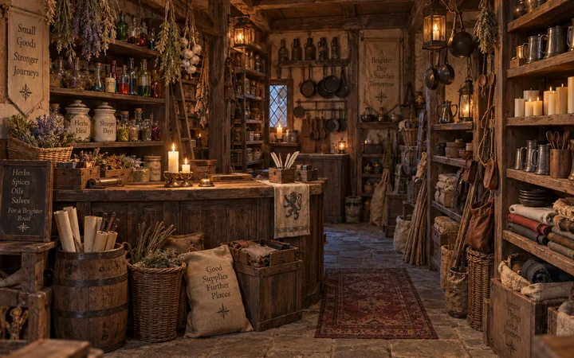
Herbs, bombs, magnets and other consumables. You can carry up to three into the field — your trump cards when things go wrong.
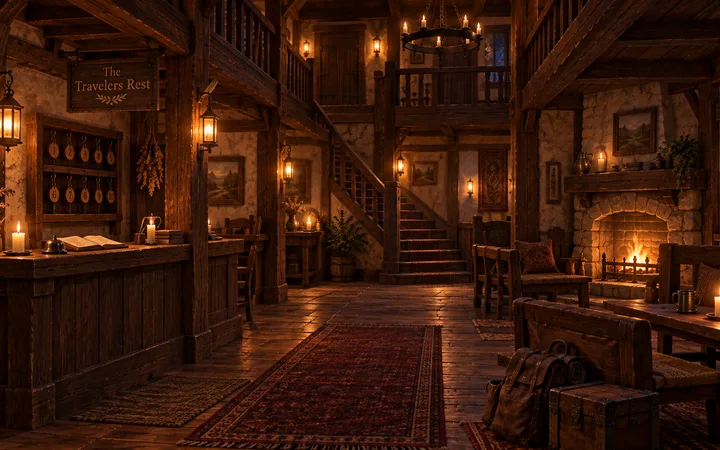
Wounds from the battlefield do not heal on their own when you get back to town. Pay for a bed and your health recovers. Writing in the journal saves your progress.
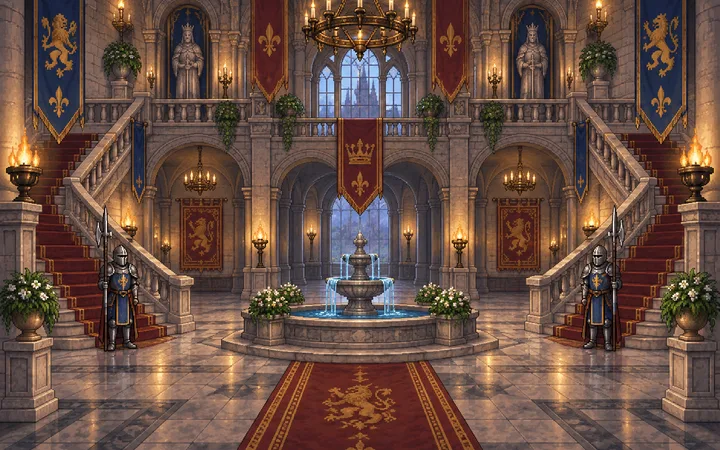
Finish every job at the tavern and the King entrusts you with a special mission. Succeed, and the reward is a spell passed down the royal line. As the chapters advance, so does the number of weapons you can carry at once.
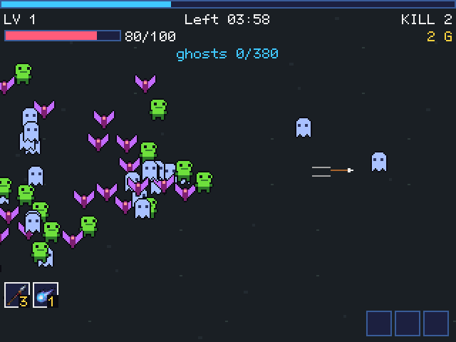
All you control is movement. Gather the bits that fall from slain monsters to level up, then choose one of three upgrades to a weapon or ability.
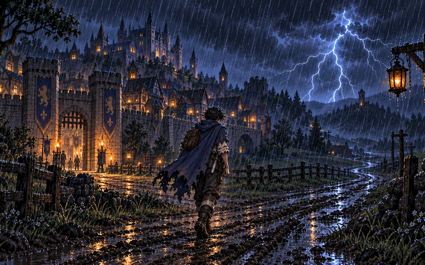
Once the job is done, you can head straight back to town — or stay and keep farming coins. But if your health runs out, you bring back only half of what you earned.
Weapons
Weapons come from the smith; spells are granted for completing the King's missions. Both attack automatically, so there is no aiming to do. Pair them with passive abilities like Duplicator or Boots and you can fill the screen with attacks and push the horde back.
Characters
Tavern master
A former adventurer who runs the tavern's job board. Loud and warm-hearted — every rumour in town finds its way to his ears.

Innkeeper
Caring, and a little nagging. She scolds the young man every time he comes home covered in wounds.

King
The hero-king who stopped the last Rush. Bound to his throne now, he still grants the royal relics to those who earn them.

Minister
Gatekeeper of the castle. He never trusts the stranger of unknown origin — not to the very end.

Weaponsmith
A man of few words. If you have the coin, he will forge for anyone.

Shopkeeper
Strict on prices, soft on regulars. He stocks herbs, bombs and other things that keep you alive out there.
World

The first battlefield is the meadow just outside the town walls. Under a sky darkened by bats, the young man takes on his first job with a single knife.

The second battlefield is a forest a woodcutter never returned from. Pale shades slip between the trees, and rumour says an old gate stands deep inside.

The third battlefield is the valley where the soldiers who fell in the last Rush lie. Nobody in town wants to talk about it.

The fourth battlefield is the gate of the monsters' castle. The hero faces the gatekeeper — and learns the truth the King has been hiding.

Follow the rumours from the tavern and you will find a seer living at the edge of the forest. She tells the hero: "You look like you've got two shadows."
Gallery
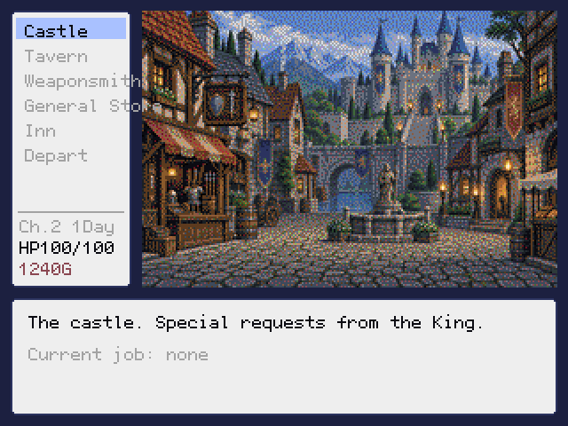
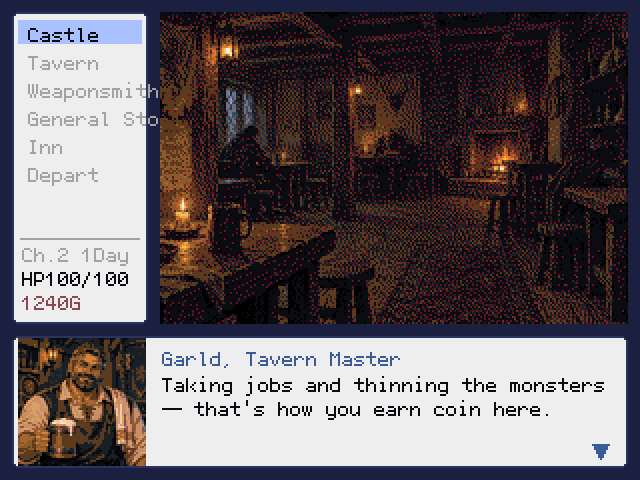
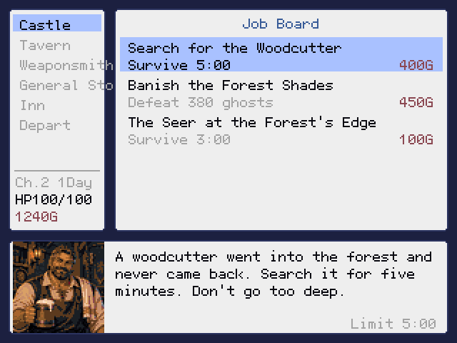
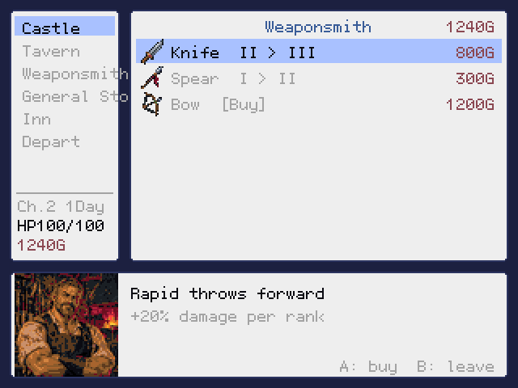
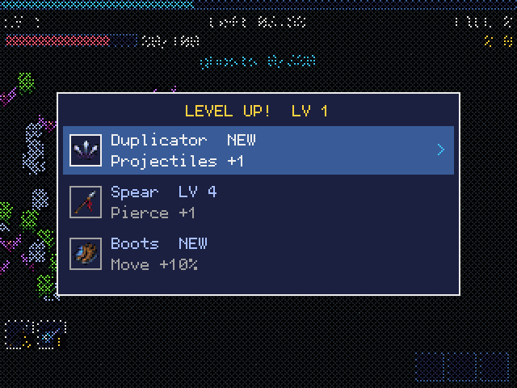
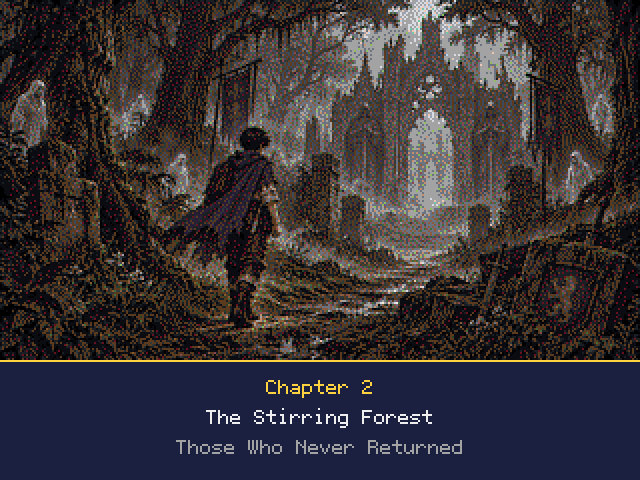
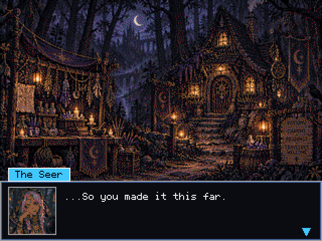
Download
Part One of the story, v1.0.0, is free to download. Part Two (the Aria arc) is in development as v1.1.0 and will be released in the same place when it is finished.
| Requirements | Python 3.10 or later and Pyxel 2.9 or later. Pyxel installs with pip install pyxel. |
|---|---|
| Run | Start the downloaded .pyxapp with pyxel play Bit-Rate-Rush.pyxapp. To run from source, execute python3 main.py. |
| Platforms | Windows, macOS, Linux and anywhere else Pyxel runs. On plumOS handhelds, drop the .pyxapp into Pyxel's ROM folder. |
| Languages | English and Japanese. The game starts in English; switch under Options → Language (the setting is saved). |
| Length | Roughly 60 to 90 minutes to finish Part One. |
| Move | D-pad / left stick / WASD |
|---|---|
| Confirm / Cancel | A / B (Z / X) |
| Pause / Return | START (Esc) |
| Items | L / R to select, Y to use |
Feel free to stream or post videos of the game. No prior permission is needed.